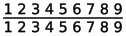
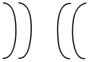
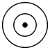

Беседа 2745 от 3877 · Беинса Дуно
Аз ще оздравея
Отче наш
Какво се говори в миналата лекция?
Аз ще ви задам един въпрос: Петелът като пее, става ли той причина да изгрее слънцето? – Слънцето изгрява и без петелът да пее. Ако петелът пее, по-добре че той оповестява. Сега някои от вас може да кажете: „Защо ми е туй пеене, и без пеене животът върви“. Но все таки по-добре е петелът да кукурига и човек да пее, по-добре се живее, отколкото да не пее човек и ако не кукурига петел, тогава по-мъчно се живее. Има нещо в живота, което не е доразбрано. Говори се за любовта, без да се разбира. Говори се за вярата и тя остава неразбрана. И надеждата, и тя остава неразбрана. Ние сме хора, които при големите блага не можем да ги използуваме. Запример, вие имате тяло и не разбирате вашето тяло. Като собственост го имате, живеете в туй тяло и се грижите заради него, но (не) сте изучавали себе си. Запример, вие не знаете колко клетки има във вашето тяло, във вашата кръв. Не сте се заинтересували да видите какво върши кръвта за вас. Червената кръв влиза и излиза. През артериите излиза кръвта, през вените се връща. После казвате: „Една глава имам, с главата мисля, с дробовете дишам, със стомаха ям. Знание що ни трябва, от туй знание страда главата“. Ти имаш глава, какво нещо е главата най-първо. Имаш душа, какво нещо е душата? И тя остава неразбрана. Че човек има дух, но и духът остава неразбран. Човек има ум, има сърце, те са ценности. Тогава казвате: „Кажете ми новото кое е?“ – Че новото е сърцето на човека. Новото е умът на човека. Новото е душата на човека. Новото е духът на човека. Тогава пита някой: „Я ми кажи ти, аз кой съм?“ – Ти си онзи, който не знаеш ценностите на своето сърце, който не знаеш ценностите на своя ум, който не знаеш ценностите на своята душа и който не знаеш ценностите на своя дух. Това си ти. И тогава питате защо умирате. Умирате, защото не знаете ценността на душата, на ума, на сърцето, на духа. – „Аз защо съм нещастен?“ – Защото не знаете ценностите. – „Защо са тия нещастия, противоречия?“ – Защото сте невежа. – „Ама ние вярваме в Бога“. – Всички вярвате във вашите изобретения – богове, които сте изобретили от вас, в които вие сами не вярвате. Защото, ако ти вярваш в този Господ, когото имаш, вечерно време като дойдеш, тогава като си пропуснал нещо в живота си, ще се спреш и ще кажеш: „Ще мине тази работа“. После, ако ти вярваш в този Господ, ако ти имаш един Господ, ти не би кряскал. Ти кряскаш, вдигаш шум, че ти никакъв Господ нямаш. Ти ако имаш вяра, ще бъдеш тих, някоя Божа кравица. Често идат при мене мнозина, които са ме учили, ученици, които чудни работи ми разправят. Разправят ми за половинката. Казвам: Как се дели единицата? Като туриш единицата и отдолу число, и ако туриш една линия на числата така:

Най-първо човек трябва да започне с изкуството на човешката мисъл. Да знаеш да мислиш, то е изкуство, после да знаеш да чувствуваш, то е пак изкуство и да знаеш как да постъпваш и то е изкуство. После, изкуство е да учиш добре. Ще се научиш на изкуството да слушаш. Ще се научиш на изкуството да гледаш. Ще се научиш на изкуството на обонянието, ще се научиш да вкусваш нещата, да ги ядеш, и най-после ще се научиш да ги пипаш. Човек трябва да изучи изкуството да ходи, да работи, това е изкуство. Вие считате, че то не е изкуство. Ами, че твоето нещастие е сутрин като излезете, зависи от първата крачка, как ще я вземете, какъв ъгъл ще направите. Сега не искам да ви турям в едно заблуждение, но аз като видя как някой тръгва, казвам: Този както тръгва, никакъв успех няма да има, съвсем ще загази. Този, който тръгне изведнъж се засилил, нищо няма да направи. Този, който тръгне и бърза, нищо няма да направи. Той е като заека, като бяга и го блъсне някой храст, подскочи. Хукне да бяга, казва: „Голяма опасност, ще ме изядат“. Станеш сутрин, казваш: „Какво ще правя, аз имам толкоз дългове да плащам“. Изпоплашиш се, имаш да даваш. Ами щом имаш да даваш, защо не бъдеш толкоз честен да идеш при баща си и да кажеш: „Татко, направих дълг без твое позволение“. Защо ще го криеш? Изповядвай се пред баща си, а ти минаваш пред баща си, като че нямаш никакъв дълг, че всичко е изправено. Той изпратил сина си, да се учи в странство и му изпращал по 10 000 лева на месец и той като ги изхарчил, нищо не изучавал и направил още 5000 лева дълг. Връща се, лъже баща си, че е свършил. Не отива да се изповяда, а лъже баща си. Всички вие сте все такива синове. Съжалявам, че го казвам, понеже между вас аз мязам на учител, който учи синове, които не са изпълнили дълга към баща си. Щом лъжете баща си, ще лъжете и мен. Каквото и да ви преподавам, ще го преподавате тъй, както не трябва. Сега бих желал да ви кажа, че сте много добри. Много добри сте, но има да давате. След туй седнал някой да ми разправя, че имал карма. Наскоро един от окултното общество, идва да ми разправя, казвам: Вие страдате, вашите главатари страдат от тщестлавие. Всеки мисли за себе си, иска да прокара някоя своя теория.
Сега да ви кажа, че аз разбирам нещо от музика. Може да ви напиша много работи от музиката, оттук-оттам взети. Откраднато едно оттук, едно оттам. Може да ви направя музика. Мога да ви направя колкото искате парчета, може да сглобя от музикални парчета, тъй както в една колегия в Америка, учениците по зоология, имали един виден професор и искали да го изпитат. Събрали се учени и студенти, направили един нов бръмбар: взели главата от един бръмбар, краката от друг, тялото от трети, скопосали нещо и казват: „Г-н професоре, намерихме един нов екземпляр, кажете ми към кой вид спада?“ Гледа той и казва: „Момчета, това е „хъмбък“. Казва: „Това е една измислена бубулечица“. Та всички вие си имате измислени бубулечици, които носите. И казвате: „Тази бубулечица към кой вид спада?“ – То е измислена ваша бубулечица. Сега можете вие да направите едно възражение. Аз ви говоря сега и вие понякой път се докачате. Нямате право да се докачате, защото вие сте на бал-маске. Нито един от вас не носи своето име. Какво обидно може да има. Или някой носи прякор Жабков. Какво значи Жабков? Или Шишманов? – Шишманов какво е? – Шишманов е бабачко, или Лисичков, или Вълков? Че откъде накъде Вълков или Лисичков? – Този Вълков, ако е от Вельо, разбирам, но ако е от вълк, тогава не разбирам. Вълков ли трябва да го казвате, или Велков, голяма разлика има. Най-първо, поправете всички ваши прякори. Защото много имена трябва да се поправят. За да бъде името ви щастливо, трябва да съдържа от трите категории букви, като разделите азбуката от първата до деветата буква, от деветата до осемнадесетата и от осемнадесетата, до края. За да бъде щастливо името ти, по една буква от тия три категории.
Един професор ми държа цяла една лекция, биологическа лекция, как се развиват растенията. Ще гледаш какво означава. Това са наблюдения. Сестри има, които постоянно пишат някои работи, без да ги наблюдават под микроскоп. Този човек под микроскопа наблюдава, а пък някой седи и си въобразява. Аз може да ви туря пет линии и да пиша нотите, накъдето видя. Ти не можеш да туриш „до“, където искаш, ти не можеш да туриш „ре“, където искаш. Ако ключовете са различни, на различни места на петолинието, нотите се местят.
Да кажем, вие имате една мажорна гама. От „до“ до „до“ е е мажорна гама, но и от „ре“ до „ре“ е пак мажорна гама. От „ми“ до „ми“ е пак мажорна гама. От „фа“ до „фа“; от „ла“ до „ла“; от „си“ до „си“. Коя трябва да вземе сега? – Ти ако вземеш от „ре“ до „ре“, то е движение. Започнал си една работа, ще започнеш от „до“. За мене от „до“ до „до“ съвсем друго значение има в музиката. От „ре“ до „ре“ има друго значение. – „Може ли да взема от „ре“?“ – Може. – „От „ми“, може ли да взема?“ – Може. От „ми“ трябва да започнеш, за да мислиш. От „фа“ трябва да имаш някакъв капитал. Ти си болен човек, не можеш да започнеш от „фа“ до „фа“. Ти си без капитал. Що е здравето? Ти, ако искаш да бъдеш здрав, трябва да изучаваш от „фа“ до „фа“. Не да оставиш, те са неразбрани работи. Не искам да ви накарам да си бъхтате ума. И да ви говоря, то е нещо само за гениалните музиканти. Но аз го превеждам като картина неразбрана. Туй, което ви говоря ще бъде толкоз разбрано, колкото в тази картина. (Учителят показва картината.) Аз като ви говоря, аз правя свой превод. Тия неща не са ясни, понеже, самият майстор, който ни говори тия работи казва: „Туй нещо не е ясно“. Има неща, които не са открити. Има хиляди работи, които са пропуснати. Казвам: В живота който ние живеем, в нашите разбирания има хиляди работи, които са пропуснати; неща, които не са ясни.
Когато казвам аз, че нямаме вяра, не че нямаме вяра, имаме вяра, имаме вяра на животните, но то не е човешка вяра, имаме вярата на паяците, но това не е човешка вяра. Запример, аз уважавам търпението на един паяк, като направи своята мрежа, по цели седмици седи, не може да хване никаква рибица, седи, укрепява своята паяжина, от едно място на друго се мести. Седи и търпи тоя паяк, докато хване нещо. Питам сега в дадения случай, като хване паякът една муха какво мисли? – Ние мислим, че паяците са много глупави. Не са. Какво изкуство имат! Един паяк като един текстилен фабрикант, изтъкава най-тънките нишки, смятане има. Като направи своята мрежа, разбира от ъглите, разбира от теченията на въздуха, разбира от времето, кога ще се развали, кога ще дойде вятър, той удвоява своите нишки. После, когато ще се измени времето, разбира, някой път седи на средата на паяжината. Това показва, че времето ще бъде едно. Някой (път) ще видиш, че се окачил на някой ъгъл, не е на центъра. Паяка като го гледаш в неговата паяжина, ще разбереш какво е времето. Този паяк взема разни пози, и всяка поза се обуславя на нещо. Сега може да ме питате: „Знае ли това?“ – Знае, разбира се, специалист е. Много работи знае, но много работи, които ние знаем, не може да ви ги дам. Паяците мислят, че освен паяците, други същества няма в света. Ако му говорите, казва: „Тия неща са въображаеми“. Казва: „Никакви други същества в света не съществуват, освен паяците, те са най-културните същества. Такива неща като нас, никой не може да направи“. Че съществуват човеци, казват: „Няма човеци, то е въпрос философски. Нашите философи нищо не са казали, дали съществува“, а пък често като направят мрежата си, дойдат тия същества, скъсат с бастуна мрежата и той обяснява туй скъсване съвсем другояче. Един паяк не може да види човека, пръста може да види, но тебе като човек не може да види. Той може да бяга от пръста, но тебе като цяло същество не те вижда, не може да те схване.
Та казвам: Ние имаме същата погрешка на паяците. Като говорим за ангелите, казвате: „Къде са? Няма други ангели освен нас. Ние сме само хората тук на земята“. Философи има, които казват, че човек е велико същество, по-голямо същество от човека няма. По-голямо същество от човека е бил само Бог, то не е така. В този смисъл, ако се каже, че човек е над всичко, ние разбираме един съвършен човек, съвсем друго се подразбира. Ако човек е всичко, че този човек, както ние (…). Та казвам: Правят сега изчисления, че в кръвта има 75 милиарда клетки, които ходят да разнасят само храната на всичките други клетки в тялото. 75 милиарда служители, които ходят да разнасят храната на всяка клетка. После, дето има нечистотии, вземат ги 75 милиарда клетки. Туй постоянно обръщане, те са същества, които прислужват за храненето в човека. Икономия има. Само в храненето има 75 милиарда същества, които помагат. Ти си гладен, като се наядеш, ще дадеш работа на 75 милиарда същества вътре в тебе, да ходят да вършат работа. Ти казваш: „Аз се наядох, тази работа аз я свърших“. – Не, приятелю, нямаш никаква философия. Ти като си ял, след тебе ще дойдат 75 милиарда същества, ще работят, ще разнасят храната в мозъка, в дробовете, по всичките части на тялото и най-малките затънтени части в твоето тяло, като се върнат, работата донякъде е свършена. Ти казваш: „Аз свърших тази работа“.
Знаете ли процеса на вярата? – Вие мислите, че вярата е нещо просто. Ти като повярваш, ще туриш в действие 3 билиона и 600 милиона клетки да работят. Във всяко вярване става пермутация. Три билиона и 600 милиона клетки ще се раздвижат и тогава ще се яви някаква мисъл и то не навсякъде, а само специфично. Другите клетки няма да знаят кои са причините. Ти можеш да смущаваш мозъка, без нищо и никакво. Дошла лъжлива мисъл. Страхът не е мисъл, но то е едно чувство, ти си се уплашил. За какво си се уплашил? Уплашил си се, че си изгубил 100 лева. От това изплашване ще дадеш смущения в тялото на 3 билиона и 600 милиона клетки. Казвате: „Трябва да вярваме в Бога“. Трябва ни знание сега и какво знание? Вие ще кажете, аз съм казал така, но някой път, аз като се върна започвам да проучвам онова, което съм казал. Този професор ми каза, че (Учителят гледа чертежа) мяза на българска тояга с гега. Този професор казва, че винаги в такова растение се раждат от мъжки род, когато има тази тояжка, все от мъжки род се раждат. Когато накрая на тояжката има гегичка, показва, че мъжки ще се родят. Когато е без гегичка отгоре, тогава се раждат женски. Ако има пръчица в клетката се раждат женски. Ако има закривена пръчица се раждат мъжки. Не само туй, то е едно от качествата и после, професорът казва тъй: /Фиг. 1/ 
Това са наблюдения. Той ми казва, че ако има една кукичка, се раждат мъжки. Ако има права линия, се раждат женски. Кажете защо да се раждат мъжки и защо да се раждат женски? Мъжки се раждат, за да имате ум; женски се раждат, за да имате сърце. Следователно, когато се роди едно мъжко и едно женско, човек започва да функционира другояче. Умът остава като един зародиш и сърцето само по себе си остава като един зародиш. Пък като се роди женско и мъжко, започва процеса в нас, започваме да мислим. Следователно, една мисъл ще мине от мозъка в сърцето на човека, в неговите чувства. Ако ти най-първо не можеш да мислиш, ти няма да можеш да чувствуваш. Пък едновременно човек като мисли и почувствува, той ще знае как да постъпва. Ти никога не можеш да постъпваш, ако не мислиш и ако не чувствуваш. То е един процес, който трябва да знаете. Успехът сега от какво зависи? – Казвате: „Аз вярвам в Бога“. Най-първо ще мислиш за Бога, после ще почувствуваш Бога. Трябва да станеш слуга на Бога, трябва да направиш нещо за Него. Ако ти имаш един Господ, за който не си мислил най-хубаво, заради Него, ако не си турил да мислиш най-хубавото заради Него, и да почувствуваш най-хубавото за Него, после да направиш едно добро, заради Него, да услужиш – ти не можеш да познаеш Бога. Ти искаш да се разсърдиш на един свой брат. Казваш: „Но заради този Господ пред Който седя, заради Него няма да го направя. Макар, че съм неразположен, но заради този Господ ще имам хубаво разположение. За този Господ, ще му направя едно добро. Не заради самия него, не заради мене, но заради Господа, Когото имам“. Тогава ти ще имаш един Господ, Който ти служи за една мярка, как трябва да постъпваш. После казва някой: „Ти нямаш ли Господ, покажи ми. Нямаш ли Господ“. – „Имам“. Хубаво, едно от двете. Покажи ми твоя Господ и аз ще ти покажа моя Господ. Аз моя Господ ще ти покажа, но покажи ми ти твоя, обмяна трябва да има. Дойде една мома, аз разсъждавам, тя носи един Господ. Тя носи Господа в сърцето. Дойде един момък, той носи Господа на ума. Казва момъкът на момата: „Покажи ми твоя Господ в сърцето“, а пък тя казва: „Покажи ми твоят Господ в ума“. Тия двата Господа, единият Господ в ума на момъка, и Господ в сърцето на момата, веднага ще образуват връзка. То е алегория. Вие ще кажете: „Влюбили се двамата“. – Не, опознава се Господ в момата и Господ в момъка. В момата Бог наблюдава колко тя го познава. В ума Господ седи да види доколко момъкът в ума го познава. След като види, че го познава донякъде, той се яви, съедини ги и Господ казва: Като се обичат, не че момъкът обича момата или момата обича момъка, ами Господ ги обича, пък те почувствуват Неговата любов, казват: „Обичаме се ние“. Господ казва: „И двамата ви обичам“. Защо ни обича Господ? – Трябва да имате ясна представа. Бог ни обича заради онова, което е вложил в нас. Дотогава, докато носим Неговия образ, Той ни обича, като оцапаме Неговия образ, Той не ни обича, като оцапаме Неговата любов, Бог не ни обича. Бог обича това, което е като Него. Защо те обича Господ? Казва: Направих го по образ и подобие Свое. Бог обича онова, което е Негово. Ти може да обичаш в другите Бога. Една сестра ми каза, тази идея тя ми каза. Една мома казва: „Помни, докато ти носиш онова, което съм внесла в тебе, докато ти носиш онези чувства, които внесох в тебе, дотогава е добре. Но в деня, в който ги опетниш, трябва да знаеш, че между нас всичко е скъсано“. В един дом има почитание и уважение, но не така безразборно. Казвам: Господ е Любов. Бог е Любов дотогава, докато носим Неговата Любов. Да отразим Божията Любов. Ако аз не може да отразя Божията Любов, това не е Любов. Когато аз отразя Неговата Любов, и когато вие можете да отразите Неговата Любов, то е Любов, тогава ще се зададе въпроса. Не че ви проповядвам аз, но искам да ви изведа из едно заблуждение. Вие седите, млади сте, след 40–50 години виждате, че сте се изменили, казвате: „Остаряхме“. Защо остарявате? – Сега може да ви кажа, защо остарявате? Защо остарява човек? – Човек остарява, защото не се обновява. Писанието казва: „Онези, които чакат Господа, душата им ще се обнови.“ Аз, когато изучавам музиката, аз имам една музика в себе си, сега аз може да ви кажа същинската музика, аз имам една музика, която свиря. Някой път свиря обикновена музика, музика на сенките. Но има една музика, която свиря, когато се намирам в най-трудно положение. Ако изляза и тъй времето е, както сега, и засвиря, веднага ще се измени времето. Ще изчезне всичката влага. Намирам се в бедно състояние, пари нямам. Като засвиря, парите идват сами по себе си, започват да се търкалят, на ваш език казано. Като видя, че идат повече, отколкото трябва, спирам да свиря. Ако попитат: „Защо спря?“ Казвам: Ще се удавя, тия пари ще ме затрупат. Аз съм правил опити като свиря, камъните и те се вдигат и камъкът може да се вдигне от едно място да се премести на друго място. Ние сме правили опити, и като видим, че камъните започват да се кланят, спираме. Като започнат да се кланят камъните, казвам: Достатъчно, не искам повече. Или дойде безверието в мене. Седна да свиря на безверието и като свиря, това безверие изчезва, дойде вярата. Дойде в мене безлюбието, посвиря му, посвиря на злото, дойде любовта, че туй е музика.
Казвам: Сега ще учите, туй в мене не дойде така, главата ми побеля от опити. Може да питате, защо побеля главата ми? – От опити, някъде сполучливи, някъде несполучливи. Може да свиря една песен и да почернеят косите ми. Може да свиря и да се подмладя, туй за мене е играчка. Но не е в сметката ми да се подмладя, защото ще имам работа с младите моми, ще тичат подире ми. Всяка мома ще хвърли око, ще каже млад момък. Да оставим туй е веселата страна. Оправдавам тичането на момите, оправдавам и тичането на момците. За мене тичането на момите е благородно нещо, за мене това представя Божествена идея. Но не мисля, че трябва да отида и гоня мухите. Когато майката се занимава със своето дете, права е тя. Каквото да върши, всичко е добро. Ние започваме добре, но свършваме зле. Сега гледам някои турят яйца под квачката, започнал много добре, иска да се измътят, ходи на тия пиленца, дава им всяка сутрин просо. Казвам: Колко е благородна. Тя потупа кокошката, хване пиленцата, помилва ги, но гледам като станат пиленцата ярки, току както върви, хване го за врата, тури го на дръвника, вземе и отреже главата. Напълни тенджерата с топла вода, туря я в тенджерата, оскуби я, след това ха с ножа, извади това онова, червата. Тури я в тенджерата да се вари. Казвам: Този човек започва добре, но свършва зле. Не, не аз не искам тази наука, не ми харесва, тя е наука на разрушението. Ние започваме да измътим любовта, но като измътим пиленцата, ти вземеш и отрежеш главата на едно хубаво чувство. Ти не си ли като онзи, който заколил едно пиленце. Че малко философия трябва. Сега, този човек аз като гледам казвам: Слушай, ти намираш, че има погрешка в този човек, но ти в себе си не си ли заклал някое чувство, не си ли го оскубал, не си ли го турил в тенджерата? – Толкоз хубави твои чувства къде отидоха? Някой казва: „Аз не ям пилета, но продавам яйцата“, че продаването и изядането за мене е все едно. Казва: „Не ям пилета, но продавам яйца“, но за мене продаването и яденето е едно и също. Аз ще го дам друг да го изяде. Никога не давайте вашите мисли да бъдат изядени от когото и да е. Има мисли, които трябва да се изядат, но нека мислите и чувствата да ги изяде някой, който може да те ползува. Някой ще изяде твоята мисъл и чувство, че всичко ще вземе и нищо няма да ти даде. Сега аз ви говоря, понеже вие имате Стоян, Иван, Драган, но това не са (имена от) ваше отечество. Кои имена са от вашето отечество? Защото няма какво да се докачате – лорд еди-кой си. Затуй ние не можем да носим нашите същински имена, понеже ще се опетнят. Бога не Го знаем с Неговото същинско име, понеже ще се опетни името му. Името, което имаме за Бога не е истинско, защото ще се опетни. Човек, за да произнесе името Божие, трябва да има чисто сърце и постъпки. Като произнесеш името, да го произнесеш с онази любов, вяра и надежда, че Бог да бъде нещо велико; свят, в който ще имаш един свещен трепет. Като дойде всичко да ти стане приятно. Като помислиш заради Него, веднага и беднотията, и смъртта, и като умираш да мислиш заради Него. Ако си на умиране и щом мислиш заради Него, смъртта ще те напусне. Смъртта щом чуе това име, ще избяга. Сиромашията, щом чуе това име, ще се оттегли. Страданието, щом чуе това име, ще се оттегли. Туй е името, в което всички неща стават. И смъртта благоговее пред Него. Няма същество в света, което като чуе това име да не застане в трепет. То е Господ, пред Който всичко благоговее. Тази идея трябва да я носите със себе си, не я разправяйте на другите. Не я разправяйте навън. Питат: „Каква идея разправи Учителят?“ Някой път аз мисля за Бога и така се тонирам. След като разправям, че не разбирате, забравям всички ваши погрешки, като произнеса името Божие. Тогава всички погрешки ще изчезнат, аз съм тих и спокоен. Казвам: Всичко е добро. В любовта няма мъчнотия, в любовта няма страдания. В Любовта няма недоразумения. В любовта всичко се обновява, има вечно блаженство. Казвам: То е хубав свят, дето да си почивам – раят е там. Гладни няма да бъдем, голи няма да бъдем.
Но сега да дойдем до земята. Сега какво трябва да се прави. Аз ще ви запитам друго. Вие с какво намерение слязохте на физическия свят? Мене ако питат, аз защо дойдох на физическото поле, ще кажа: Аз дойдох да си купя бои, да си купя само бои, понеже няма в горния свят. Дойдох да си купя бои, за да рисувам. Само за бои трябва да слеза. Трябваха ми, аз само за бои дойдох. Аз съм дошъл сега в музиката и боядисвам тоновете. Като срещна една тоналност, един тон, боядисвам. „До“-то боядисвам с червен цвят, да го познаваме, да се освободя. Другояче, всичките тонове са без цвят. Като го хвана веднъж, боядисвам го. Ще ви кажа, че „до“-то боядисвам с червен цвят, вие с какво го боядисвате? Аз ще ви кажа, че „си“ боядисвам с ясно-син цвят. С червено и синьо боядисвам, след това започвам да произнасям. Как ще произнесеш синия цвят, как ще пееш? Един художник, който не може да пее, той не може да рисува. Аз съм се опитвал някой път да рисувам, но такива гарги съм рисувал – и в музиката, като запея и свиря хубаво, гениален художник съм, без музика, гарги рисувам, криви линии. Някой път аз се смея на себе си. Като река да рисувам, казвам: Така ли се рисува, няма линии, децата така рисуват
/Фиг. 2/. 
Туй око ли е, така не се рисува, два клепача има окото, горният клепач е бащата, а долният клепач е майката. Детенцето е окото, казват: „То е нежно детенце“. Те го пазят. Да стане (голямо), да порастне, постоянно го чистят, мият. Бащата и майката казват: „Даровит син е той, всичко вижда навън“. Клепачите се допитват до сина, питат го да види, синът отвътре разправя на баща си какво е видял и на майка си разправя. Те го чистят, а синът ги учи. Казват: „Синко, я погледни и ни кажи“. Синът учи баща си и майка си. Синът учи клепачите. Писанието казва: „Синът ще ви направи свободни.“ Окото ще ви направи свободни. Ухото ще ви направи свободни. Носът ще ви направи свободни. Сега какъв опит искате вие да направим в музиката? Да направим някой опит, да ви накараме всинца да се разиграете, както седите. Или искате, както седите всички, един по един да си излезете навън? Аз може да ви изкарам всинца навън, един по един да излезете. Много лесно е, но не изведнъж. Аз ще ви свиря толкоз дълго време, вие ще се уморите и ще ме оставите. Всички може да ви изпъдя из салона. Ще мязам на онзи музикант тогава, който дал един концерт в Париж. Понякой път обичал да се захласва. Започнал един концерт и толкоз дълго свирил, публиката започва да го напуща, излизат всички, а той свири на естрадата. Най-после идва слугата и казва: „Господине, когато свършите парчето, можете да заключите“. И вие понякой път сте ми държали такива дълги концерти. Имаше един Тенекеджиев се казваше мисля, славянски философ. Иде един ден при мене и ми казва: „Господине, пет минути може ли да ми дадете?“ – Може. Влиза той и държи часовника си. Цели три часа ми говори. Слушах го три часа. Казвам си: Колко можеш да търпиш? – Като свърши казва ми: „Да излезем да се поразходим“. Три часа ми говори, цитира, та ми дрънка, дрънка, казва: „Разбра ли?“ Рекох: Разбрах. Та туй, което разбрах и на вас ви казвам. Три часа седяли ли сте вие да чувате дрънкане. И на себе си като излезе, казах: Никога да не дрънкаш, виждаш ли този, който ти говори, дойде за 5 минути, но говори 3 часа. Този човек, той е свободен, то зависи и от мен, аз можех да изляза от там. Държи часовника като англичанин. Англичаните имат хубава черта. Дал той рандеву някому, ти му отиваш на гости, но се извинява и казва: „Господине, имам рандеву, поканен съм, ще ви оставя вкъщи“. Отива си. И ти може да си отиваш. Казва: „Отивам на рандеву“, че ти си отишъл на гости, не държи сметка за това. Той държи сметка да изпълни своята длъжност, той ще поздрави госта си и ще си иде. Ти сега седиш, дойдат ти гости, говорят за новите идеи. Защо вярваш в това? Не, не, рандеву имам. Всеки един да бъде последователен на онова, което е дълбоко заложено. Всички искам да бъдете верни на вашата любов; всички искам да бъдете верни на вашата вяра; всички искам да бъдете верни на вашата надежда. Бъдете доволни от дрехите, в които сте облечени. Или бъдете доволни от вашия стомах. Или бъдете доволни от вашите чувства. Или от вашата дихателна система. Туй, че може да дишате. После, радвайте се, че мислите. Радвайте се, че можете да мислите малко. Като станете помислете малко. Колко научни работи има? Една сестра казвате, че чете само Евангелието. Казвам: Спасително е, щото чете Евангелието. Кое трябва да четете в Евангелието? – Като четеш в Евангелието, трябва да възстановиш оригинала. Като започнеш да четеш Евангелието, трябва да имаш всичкия живот на Христа, с всичките апостоли от началото до края, като на кино да ги виждаш, тъй както е било неопорочено, не оттук оттам взето, това не е Евангелие, то е само една скица. По някой път трябва целият този процес във вашия ум да се възстанови. Когато аз мисля за Любовта, аз не мисля само за Любовта между двама души. Мисля за Любовта, която едновременно задоволява всички живи същества. Аз мисля вече за Любовта, че вече няма страдания, то е Любов. Любовта, която задоволява света – не е туй любов. Любов е туй, което поправя всичките погрешки. За мене Любов е туй, което възкресява хората, туй, което ги кара да живеят добре, без да се лъжат. Най-хубавото, най-красивото, това е Любовта. Дето видим хубавото, красивото, там е Любовта. Туй, дето не е Любов, оставете настрана. Любовта като дойде в безлюбието, туй място ще стане така ценно както Любовта.
Та казвам сега: Допуснете сега във вас Любовта да започне да действува, там, дето не е действувала досега. После като дойде новата Любов, изисквайте от нея да ви направи невидими. Вие трябва да се учите вече да се смалявате. Вие досега сте се учили да растете, а пък сте израстнали много и там е (всичката) ви мъчнотия. В дома си, жената иска да ти се скара, ти изведнъж се смали, че като те погледне да те не вижда, да изчезнеш пред нея. После, затъжи се за тебе, къде ли отиде? Започне да плаче, пак излез пред нея. Разсърди се, пак изчезни. Имаш да даваш пари някому, изчезни. Искат да те изпъдят от църквата като еретик, ти изчезни, после пак се появяваш. Че няма ли да всяваш страх във всичките. С благоговение ще те гледат хората, ако така може да се явявате. Сега вие ще кажете: „Учителю, покажи ни как“. В Париж един адепт правил един опит. Минава във висшето парижко общество и казва: „Аз може да ви покажа, как със своята мисъл може да спра един трен“. Качва се с графове, контове на трена и казва: „За да направя този опит, ще ми дадете огърлици, скъпоценности, пръстени, всички те ми са необходими“. Дават му всичко, качват се на трена и като тръгва трена, идва на едно място и казва: „Аз ще спра трена“. Като казва, че ще спре трена, той скача от трена, тренът заминава и той задига работите.
Никога не правете никакъв договор с дявола. Всякога той ще ви изиграе. Досега дяволът нито един договор не е изпълнил. Вие някой път мислите, че кой ще го застави? Кой ще го застави да изпълни туй, което ви е обещал? Нали вашият живот от какво седи? Всички вие сте хора на разочарованието. Казвате: „Така ли мислех“. Мисли, за това, което Бог може да ти даде, а не туй, което хората може да ти дадат. Не че е лошо, тия хора ще ти дадат нещо и ще ти го вземат. Един човек може да ти направи една услуга и той ще иска и ти да му направиш услуга. Единственото отношение е онова, което Бог върши заради нас. Ние трябва да разбираме Божествения свят, за да тръгне в нас правилно еволюцията в живота. Понякой път, аз се уча от вас. Знаете ли в какво отношение? – Понякой път аз разсъждавам и гледам, има някои хора, които 20 години вземат лотариен билет и са спечелили само по 200–300 лева. Казвам: Каква вяра. Двадесет години той вярва, че ще спечели. Аз бих желал да имам тази вяра. Аз като взема 3–4 билета и ако не спечеля намирам хубавата черта. Този човек ще вземе билет и казва: „Ще спечеля“. Казвам: Може би ще спечели. В най-големите противоречия, виждам добрата страна. Аз всякога като взема билета, зная ще спечеля или не. Питат някои: „Как го знаеш?“ – Туй, което може да направиш, ти го знаеш; туй, което не можеш да направиш, ти не го знаеш. Ако един цигулар може да вземе своята цигулка и да свири една вечер на сцената, може да вземе 20–30–40–50 хиляди лева, или една певица като разклати гърлото си с тия високи тонове, взема 50–60 хиляди лева на вечер. От какво зависи щастието? Как стана щастлив цигуларят? Да знаеш да свириш с цигулката. Има някои на физармоника свирят, но трябва да знаеш, без този лък, без тия пръсти, ти не може да свириш. Цигулката свири туй, което ти мислиш, чувствуваш и постъпваш. Аз понякой път мисля, защо да свири цигулката? Той има мисъл и чувство. Ако нямаше тия мисли и чувства, не можеше да свири. Цигуларят в мене трябва да вложи нещо. Има един глас, който трябва да се вложи, може да свириш механически, пък може да свириш от душа, то е Божественото. Божественото в тебе, от душата ти трябва да излезе и да влезе в цигулката. Щом свириш така, ти свириш добре. Щом не влезе, ти имаш механическо свирене. Тук под лъжичката ти стане топличко, приятно. Аз го наричам магнетизъм в музиката. Всички тонове вървят по един закон. Всички тонове идат на място. Изгубиш този магнетизъм, нотите изхвръкват, няма с какво да ги свържеш. Това наричат вдъхновение на музиканта. Казвам: Ако вие всички дойдете до Божествената Любов, всички ще бъдете певци, ще можете да пеете. Я ми кажете, коя е любовната песен? Аз още като чуя една мома да пее, аз ще ѝ кажа ще бъде ли щастлива или не. И момъка като го чуя да пее, ще зная, ще бъде ли щастлив или не. Казвате: „Няма да оздравея, няма да оздравея“, туй музика ли е? Как ще пееш? – Ще оздравея. Пейте сега: Аз ще оздравея. Минорни гами има. Ти в една минорна гама не можеш да оздравееш. Мажорна гама трябва да бъде. Изпейте ми сега тази песен „Аз ще оздравея“. (Учителят пее: „Аз ще оздравея, аз ще оздравея, аз ще оздравея; здрав съм, здрав съм, аз ще оздравея“.) Като че тази песен не се е пяла. Някой казва: „Отиде, няма да оздравея, няма да оздравея“. Има любовни песни: „Ти не ме обичаш, ти не ме обичаш, колко съм тъжен“. Или, „Ти ме обичаш, аз вярвам в тебе“. Пей ти на своята възлюблена, пей така: „Ти ме обичаш“. Как ще постъпиш сега, аз вярвам, ти ме обичаш. Попей тази песен. Ама не мога да я пея. Думата „не мога“ в Любовта не съществува. Ще туриш „мога“. „Не мога“, ще напишеш „Не, мога“.
Коя песен да изпеем сега? – Толкоз образци съм ви дал. Например песента „Махар Бену“, или „В начало бе Словото“, или „Бог е Любов“. Как бихте изпели вие „Бог е Любов“? (Учителят изпява „Бог е Любов“ грубо, рязко.) Не може така. Сега как ще изпеете „Бог е Любов“? За да пеете „Бог е Любов“, трябва да имате един узрял плод; който иска да изяде този плод, трябва да има хубава краска, да ви привлече, че да се зароди желанието да влезе във вашия дом, да го приемете на гости. Тогава може да пеете. Няма да пеете, като имате зелен плод, но като узрее плода. На един плод хубаво узрял, тогава вече можете да пеете. Ако искате Любовта, ще имате един светия, отгдето минава, той говори добре за хората. Тогава може да пеете. Той ще ви услужи да вземете като основен тон. В Любовта има основен тон, който трябва да вземете. Може да ви пея: „Любовта дава живот“. Как да ви я изпея сега? – Ако ви я изпея тъй, както трябва, всинца, които сте болни и кашлите, трябва всинца да оздравеете. Не искам да пея, че като я изпея и вие не оздравеете, аз ще се компрометирам. По някой път вие искате аз да опитам. Аз съм готов на опити. Вие искате аз да направя опит, пък вие да не плащате. Половината от разноските, които аз ще направя, вие ще платите и половината, аз. Но аз да платя всичките разноски, ще бъдете тъй добри, никога да не очаквате, да не искате от мене. Турците казват: „И тъй да бъде, пак не вярвай“. Ти, казва, ме обичаш. Но любовта винаги подразбира: Ти сееш едно семе, една ябълка, всякога имаш предвид, че ще израстне и ще даде плод. Ти идеш, трябва знание, трябва да даде благо. И във вярата, и в Любовта, всички неща имат свое проявление. Любовта трябва да се прояви. Когато ние обичаме някого, нашата любов трябва да се прояви чрез него. Ако не се прояви, едно от двете – или моята Любов не е била каквато трябва, или пък онзи предмет, към който е насочена Любовта, не я е използувал. И в Писанието имаме онази притча за талантите, които са дадени, те са три вида: онзи, с единия талант който не използувал Любовта, взема се от него. Талантът означава Любовта. Любовта във вас, трябва да внесе своя плод. Любовта, която имате, тя винаги ще се върне към вас. Всякога Любовта трябва да иде, да направи добро и да се върне при вас. Докато не направи всичкото добро, тя не ще се върне при вас. Когато се върне, вие ще бъдете радостни.
Казвам: Турете сега в ума си – „Ние трябва да служим на Бога, да служим на Любовта.“ Днес какво ще направим за Господа? Едно микроскопическо добро. Едно микроскопическо добро заради мен. Може да направя някой път микроскопическо добро. Аз имам две котки. Понякой път, като нямам работа, създавам си мъчнотии на себе си. Аз като се качвам горе, те пред мене вървят, по стълбата, спират се пред мене, качват се и двете. Защото като се кача, ще отрежа кашкавал, ще дам на едната, ще дам и на другата. Казват: „Няма работа, храни котките“, но после седят и двете пред вратата, пазят. Едната на едната страна, а другата на другата. Цяла нощ стоят, очакват ме. Защо? – Заради кашкавала. Аз вземам в друг смисъл. Казвам: Ако тази котка седи за малко – аз как разсъждавам за себе си? Ако тия две котки за малко кашкавал ме чакат цяла нощ. Аз като им дам малко кашкавал те са благодарни, казвам: „Аз при Божиите врата не може ли да чакам като тази котка“. Тази котка един добър пример ми дава. Аз излизам, давам кашкавал, давам и хляб по някой път. Те отвън седят без юрган, казвам: Похвален пример имат, заради мен. Казвам: За мене е отличен пример. Аз като тия котки не може ли да направя? Ако котките може да седят при моята врата, и аз може да седя при Божията врата, да чакам при вратата на Любовта и като излезе Господ, да получа нещо. Та казвам сега: Аз вземам и от котката пример. Понякой път и човешкото идва в мене. Някой път котките се преплитат в краката ми и мене ми иде да я блъсна. Един ден иде, че ме безпокои. Искам да се разправя, един джумбуш да направя, да я бия не е педагогическо, не е хубаво. Рекох, ще я изненадам и като я полях с вода, тя хукна и като слезе долу избяга и после в кухнята се е качила горе на печката да се суши. Като иде после ми казва: „Пак баня има ли?“ – Казвам: Като котката не сте се научили още да се къпете, с близане не става, баня трябва. Та вземете пример от животните. Човек от всичко трябва да се учи. Та казвам: Не са виновати котките. Те идват при мене, аз ги привикнах. Казвам: Две котки идват, може да разправям за тях, опитвам какъв е нравът им. Сега, като отворя вратата, влизат вътре. По-напред не влизаха, ако кажа влезте, тогава влизат. Има нещо в нас, което трябва да възпитаваме. Аз навеждам всичките наши мисли, всичките наши чувства и постъпки. Животът на земята седи да възпитаме своите мисли, своите чувства и своите постъпки. Този закон вие може да го направите. Казвам: Има една сила у човека.
Сега кажете, втория път каква програма да имаме. Кой от вас втория път ще се реши да пее; или за Любовта, или за вярата, или за надеждата една песен. Или за парици ще пеем, или за знания, или за здраве да пеем. Който от вас да пее, не искам така неприготвено. Един певец 10 години ще посвети, докато се научи да пее. Искам да направим упражнения, не да кажете: „Аз по вдъхновение пея“. Във вдъхновението погрешки няма. (Учителят показва картината.) Какво ще разберете, биологически явления са това. Сега по свобода, кои от вас са готови за следния път за концерт. Искам най-малко двама, трима души на сцената да ми попеят съвсем нови песни, не стари песни, които сте пяли „Цвете мило, цвете красно“. Не, съвсем нова песен. Даже не и една песен, която сте пяли. Не и „Махар Бену Аба“. Тия всички сте пяли. „Мене ме майка роди, право да мисля, право да мисля и добре да чувствувам и право да постъпвам“. Или пък турете си някой друг текст. Но туй да ви бъде: „Мене майка ми ме роди право да мисля“, като пример. Или пък песента „Надеждата е път, вярата е постижение, любовта е обновяване“. Ето една нова песен. „Надеждата в мене е път, Вярата в мене е постижение, а Любовта в мене е обновяване“. Ето една песен за втория път. Хайде да видим, който може, но който ще пее, добре да пее, защото ще има една премия. На онези, които пеят добре, ще платим, а онзи, който не пее добре, даром ще пее. Тези, които няма да пеят добре, даром ще пеят. Тия, които пеят хубаво, ще им платим както, на един артист, преизобилно ще платим, той да е доволен и ние да сме доволни от пеенето.
Мото:
Христос е човекът на изобилната сила,
Христос е човекът на изобилната вяра,
Христос е човекът на изобилната любов.
Аз ще взема участие във вашия концерт. Хайде, аз ще ви свиря върху отворения и затворения ритмус, върху ритмуса на постижението.
XVII година.
8 лекция на Общия окултен клас,
държана от Учителя на 24 ноември 1937 г., сряда, 5 ч. с.
София – Изгрев.